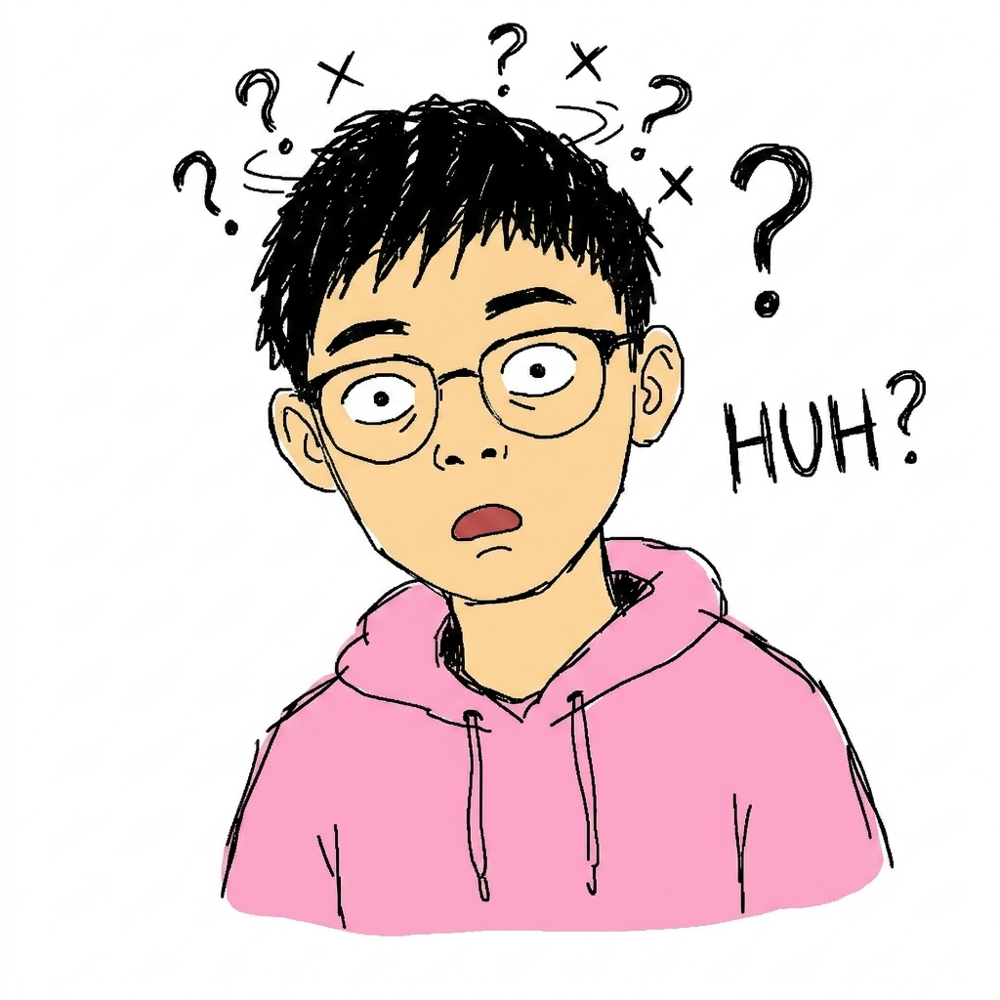

LIVE INTERPRETER
你的即席雙向口譯官

預設角色
即席口譯 · OpenAI Realtime
設定 API Key 後，按右邊開始逐句雙向翻譯
READY
選好兩種語言後，按「開始即席口譯」，講者說一句就翻一句。
TRANSCRIPT
原文與譯文逐句紀錄
INTERPRETER SETUP
選擇你常用的兩種語言
尚未修改
講者說 A 就翻成 B，切換到 B 就翻回 A，逐句雙向。
進階：檢視／自訂送給模型的提示詞
按「儲存翻譯設定」會依上面的選項重新產生這段提示詞並覆寫。若要手動微調，改完直接按「只儲存提示詞」。